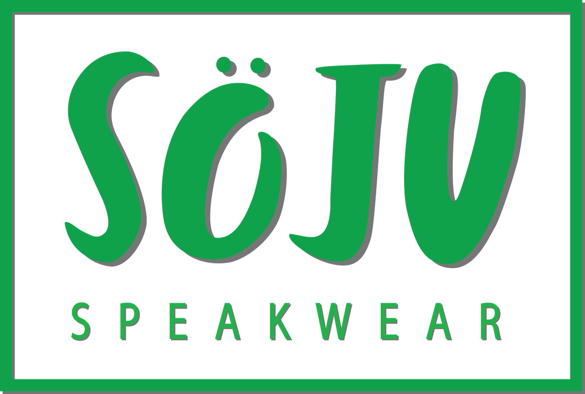
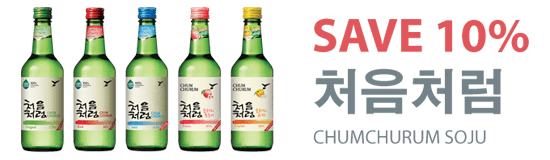
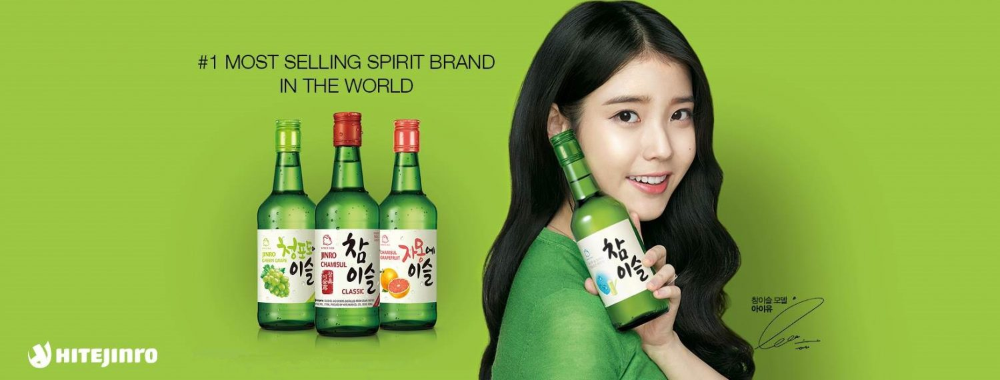
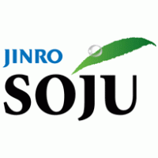
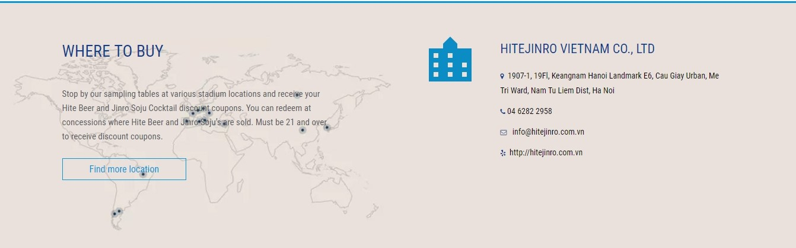

Giới thiệu
Lịch sử của HITE-Jinro GROUP đại diện cho lịch sử của đồ uống có cồn Hàn Quốc. Jinro, công ty soju lâu đời nhất tại Hàn Quốc, được thành lập vào năm 1924 và HITE được thành lập vào năm 1933 là công ty bia đầu tiên tại Hàn Quốc. HITE và Jinro đã tiếp tục phát triển để đại diện cho ngành công nghiệp đồ uống có cồn tại Hàn Quốc, đặt chất lượng và sự hài lòng của khách hàng làm tiền đề cao nhất và là ưu tiên hàng đầu của mình trong suốt thời gian tồn tại và phát triển của công ty.
Công ty HITEJINRO Việt Nam được thành lập từ tháng 11/2015, là công ty 100% vốn của Hàn Quốc và là một trong 5 văn phòng đại diện của Tập đoàn HiteJinro toàn cầu. Sản phẩm của công ty đã có mặt tại hơn 65 quốc gia trên toàn cầu, những sản phẩm nổi bật của công ty bao gồm : rượu Jinro Soju, rượu Jinro 24, Max Beer, rượu gạo Meakguli... Sản phẩm rượu Soju của Hàn Quốc đã được người Việt Nam biết tới và ưa chuộng sau hơn 10 năm có mặt tại Việt Nam, để mở rộng thị trường, công ty chúng tôi đang tìm kiếm những ứng viên tài năng và nhiệt huyết để đồng hành cùng sự phát triển của công ty.

JINRO SOJU CLASSIC, JINRO CHAMISUL
JINRO CHAMISUL GRAPEFRUIT, JINRO 24, MAX BEER, HITE BEER
Are registered trademarks of HiteJinro's. © 2016.
All rights reserved. All other trademarks and trade names are properties of their respective owners.